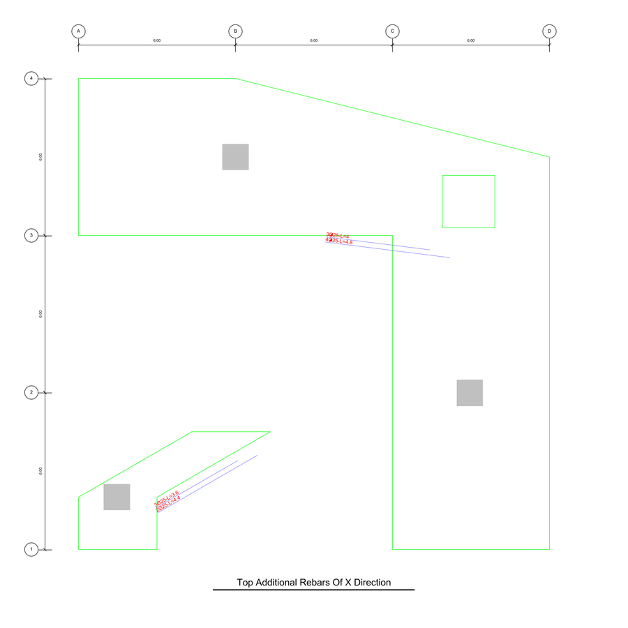
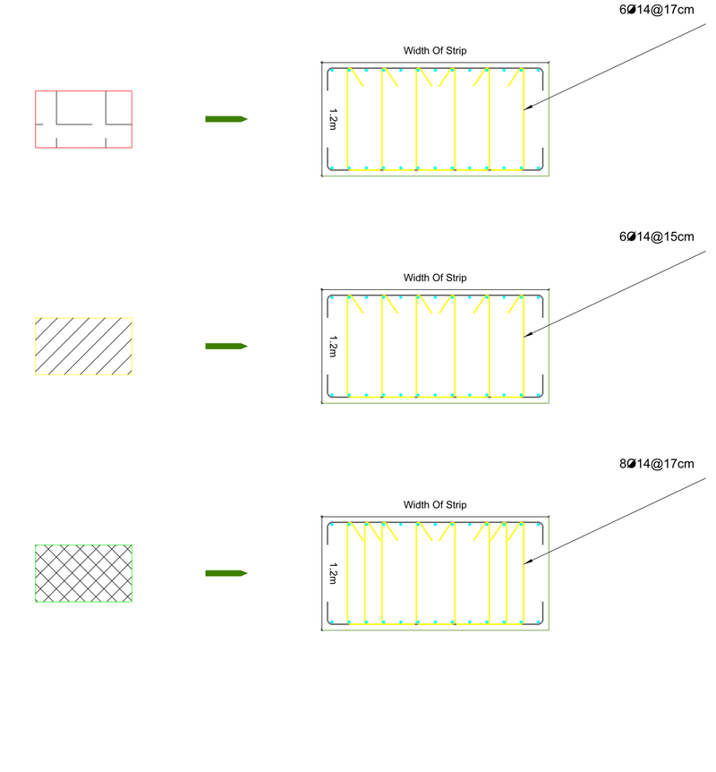
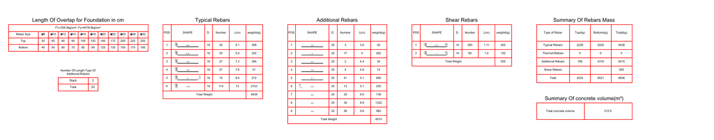
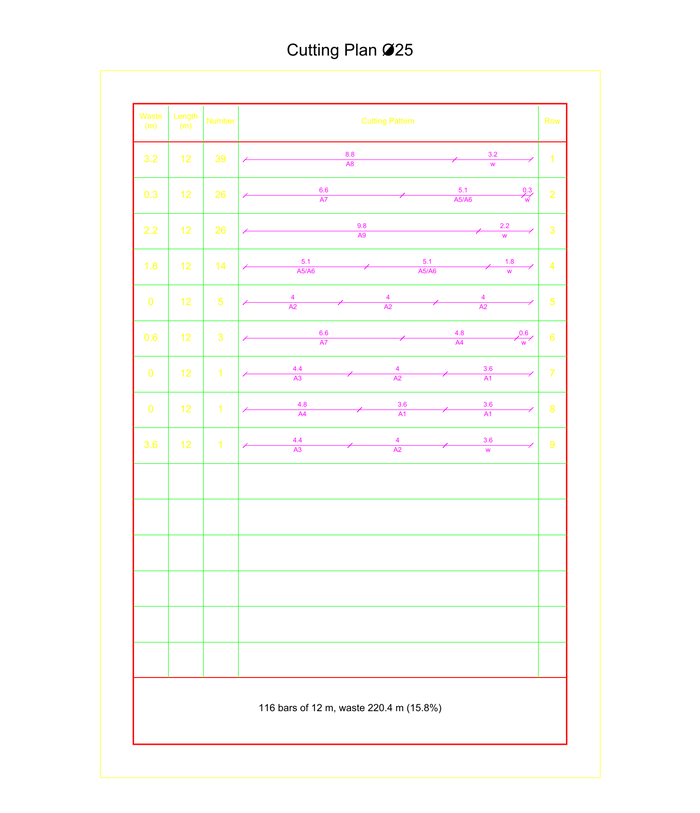

Outputs#
DXF drawing#
DXF Drawing saves the detailing map as a DXF file in meters. It opens in AutoCAD, AutoCAD LT, BricsCAD and free DXF viewers, and can be saved as DWG from any of them.
The drawing is laid out in model space as a row of sheets, each with the foundation plan, grids, grid dimensions and columns:
Name and width of the strips
Top typical rebars, X and Y direction
Top additional rebars, X and Y direction
Bottom typical rebars, X and Y direction
Bottom additional rebars, X and Y direction
Shear zones, hatched by shear type
Every bar is labelled with its number, diameter and length, for example 4Ø25-L=4.8, and follows the mid line of its strip.

After the sheets come a section of every shear type, with its stirrups and label,

followed by the tables: overlap lengths, number of length types, the piece list of every rebar type with its bar shape and weight, the mass summary and the concrete volume. Last are the moment diagrams of every strip, with the resisting moment φMn and the ultimate moment Mu along the strip, top and bottom.

Each kind of object is on its own layer, for example Typical Rebar Top, Additional Rebar Bottom, Rebar Text, Dimension or moment, so parts of the drawing can be hidden or restyled.
Below the sheets are the cutting plans: one or more portrait sheets per bar diameter, saying how to cut the pieces from 12 m stock bars.
Each row is a cutting pattern with the number of bars to cut that way, the pieces drawn to scale with their lengths, the waste (w), and the position of each piece in the piece lists, for example A5 for the fifth row of the additional rebars.

The plans use as few stock bars as possible: the patterns are found by column generation and the number of bars of each pattern by an integer program, so every piece is cut exactly as many times as needed.
PDF drawing#
PDF Drawing saves an A4 sketch: one page per strip with its top and bottom additional rebars, followed by the mass summary, the technical specifications, the piece lists and the cutting plans. It is meant for a quick check, the DXF is the detailing map.
Results file and summary#
Save Results writes two files, for example foundation_calculation.json and foundation_calculation_summary.txt.
The summary is the text of the Report box, headed by the input file and the main settings, and ends with every pattern of the cutting plans. It is meant for reading and for attaching to a report.
The JSON file holds everything needed to reproduce or post-process the result:
Key |
Content |
|---|---|
|
The OPTiBAR version that produced the result. |
|
Date and time of saving. |
|
The SAFE database the project was loaded from. |
|
|
|
The settings of the calculation tab. |
|
The engine output, see below. |
For a computation, result has a data key with the detailed foundation, and warnings when there are any.
When the number of length types is too small to be feasible, result has an errors key with min_feasible_num, the smallest total number of length types that works.
The main parts of result["data"] are:
Key |
Content |
|---|---|
|
Rebar mass in tons by type and level, and the concrete volume in m³. |
|
The piece list of the typical, thermal, additional and shear rebars: diameter, length, number and bends. |
|
Per strip: geometry, the bars of every row with their practical stations and bends, shear zones, and the moment diagrams. |
|
Materials, covers, the special lengths per diameter, and the numbers of length types used. |
|
The shear arrangements: diameter, number of legs and spacing. |
|
The foundation outline, openings, columns and grid lines. |
|
The cutting plan of every diameter: stock length, number of bars, waste, and the patterns with their pieces. |
For an analysis, result is a list with the data part of every combination, or {} where a combination isn’t feasible.